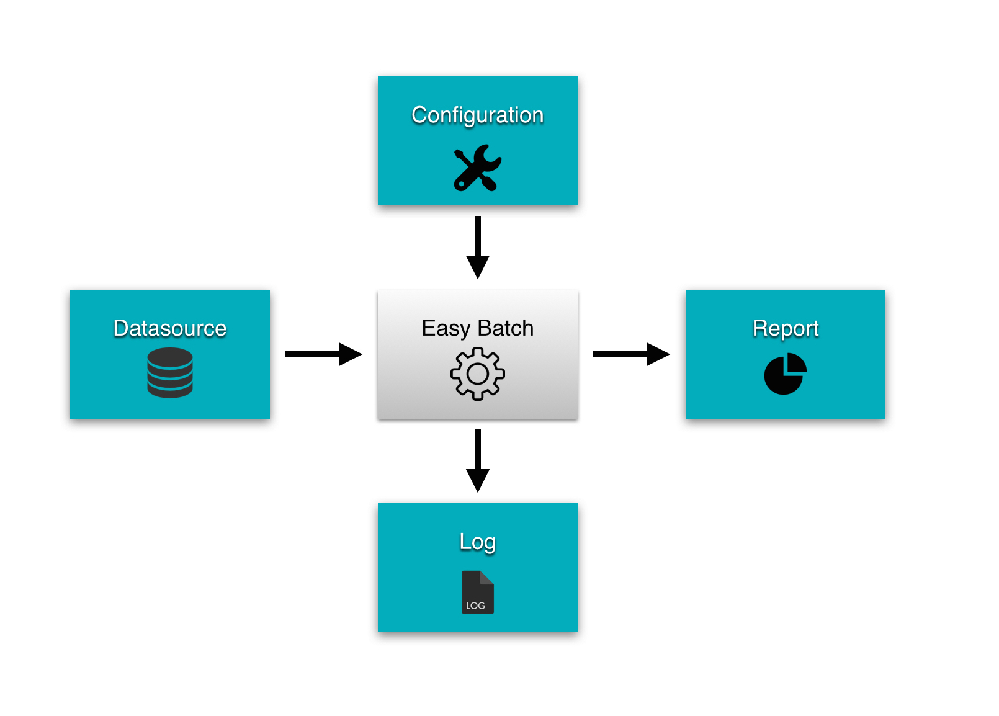

<div class="inner">
    <!--Static Banner-->
    <section class="static-banner container">
        <div class="slide">
            <div class="col-md-7 pull-center"></div>
            <div class="col-md-5 caption">
                <h1><strong>Easy Batch</strong></h1>
                <br>
                <h3>Get rid of boilerplate code when developing batch applications with Java.</h3>
                <br>
                <h3>Concentrate on your business logic and let Easy Batch take care of the rest..</h3>
                <br/>
                <br/>
                <p class="pull-center"><button id="learnMore" class="btn btn-lg btn-primary">Learn more</button></p>
            </div>
        </div>
    </section>
</div>